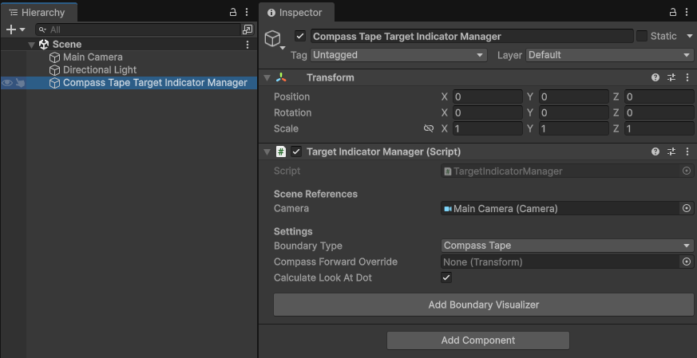
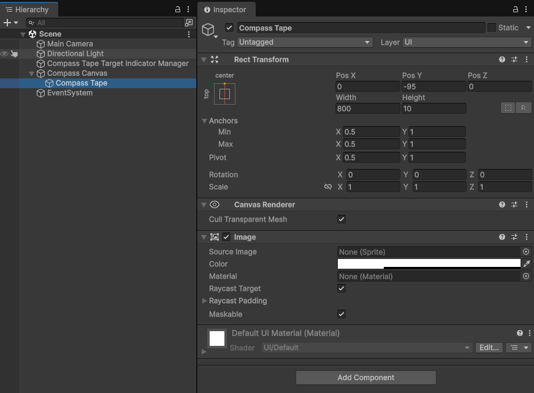
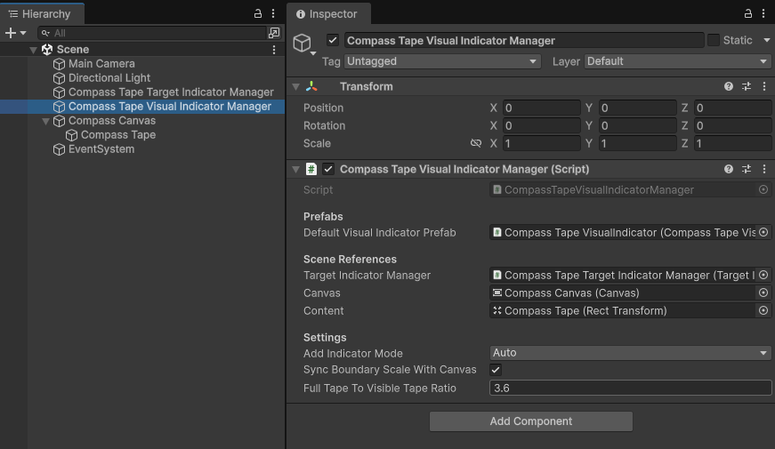
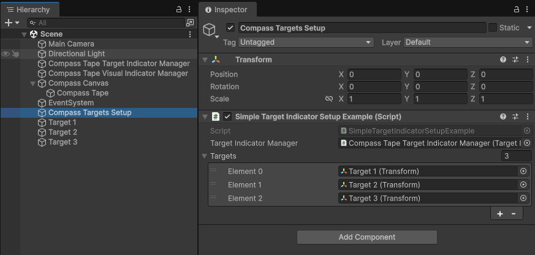
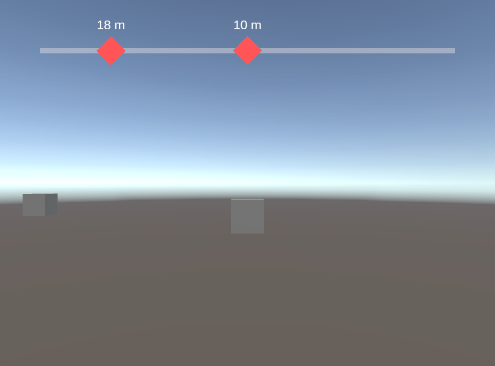

Set up a compass tape
This page walks you through setting up a compass tape, a horizontal bar across the top of the screen that shows the direction of each target. As the player turns, the visual indicators slide along the tape. This is the same setup as the Compass Tape Demo in the sample scenes.
A compass tape works differently from screen indicators. Instead of a position on screen, each target indicator holds the target's direction, and a special visual indicator manager places the visual indicators along the tape. To learn more, refer to Compass tape boundary type.
Before you start, complete the steps in Get started to prepare your project and scene.
Set up your scene
Follow these steps in order. Each step links to the page that explains its settings in more detail.
1. Add the Target Indicator Manager
The target indicator manager tracks your targets and calculates a target indicator for each one, which holds the target's direction relative to where the player is facing.
- Create an empty GameObject from GameObject > Create Empty and name it
Compass Tape Target Indicator Manager. - In the Inspector, select Add Component and add Target Indicator Manager.
- Check that Camera is set to your scene's camera. The component assigns the camera tagged
MainCameraautomatically. - Set Boundary Type to
Compass Tape.
By default, the direction to each target is measured from the camera. If the player can look around freely, for example in a vehicle with a turret camera, you can measure it from another object instead by setting Compass Forward Override. For more information, refer to Compass forward reference override.

2. Create the Canvas and the tape
Visual indicators are Unity UI elements, so they need a Canvas.
- Create a Canvas from GameObject > UI > Canvas and name it
Compass Canvas. - In the Canvas component, leave Render Mode set to
Screen Space - Overlay. - In the Canvas Scaler component, set UI Scale Mode to
Scale With Screen Sizeand Reference Resolution to1920x1080.
Next, add the tape. Its width is the visible length of the compass, and the visual indicators are placed along it.
- Right-click
Compass Canvasin the Hierarchy, select Create Empty, and name the new GameObjectCompass Tape. - In its Rect Transform, set the following values to place the tape at the top center of the screen:
- Anchors Min and Max to X
0.5, Y1. - Pivot to X
0.5, Y1. - Pos X to
0, Pos Y to-95, Width to800, and Height to10.
- Anchors Min and Max to X
- Select Add Component and add an Image. Lower the alpha of its Color so the tape shows as a faint bar, for example to
64.

3. Add the Compass Tape Visual Indicator Manager
The compass tape visual indicator manager creates a visual indicator for each target indicator, and places it along the tape based on the target's direction. Use it instead of the regular Visual Indicator Manager, which can't display compass tape target indicators.
- Create an empty GameObject from GameObject > Create Empty and name it
Compass Tape Visual Indicator Manager. - Select Add Component and add Compass Tape Visual Indicator Manager.
- Set Default Visual Indicator Prefab to the
Compass Tape VisualIndicatorprefab inAssets/Target Indicators/Samples/Core Assets/Prefabs. - Set Target Indicator Manager to the
Compass Tape Target Indicator ManagerGameObject from step 1. - Set Canvas to
Compass Canvas, and Content toCompass Tape. - Leave Add Indicator Mode set to
Auto, so the manager creates a visual indicator for every target you add. - Set Full Tape To Visible Tape Ratio to
3.6. The visible tape covers 360 degrees divided by this value, so3.6shows the 100 degrees in front of the player. Targets outside that range are hidden until the player turns toward them. Don't leave it at0, or every visual indicator sits in the middle of the tape.

To learn more about each setting, refer to Compass tape visual indicator manager.
4. Add your targets
Add your targets the same way as for screen indicators.
Track targets in your scene
- Create an empty GameObject and name it
Compass Targets Setup. - Select Add Component and add Simple Target Indicator Setup Example.
- Set Target Indicator Manager to
Compass Tape Target Indicator Manager. - Add your target objects to the Targets list.

Track targets created at runtime
To track targets that your game creates at runtime, each with its own visual indicator on the tape, follow Track targets created at runtime and set the spawner's Visual Indicator Manager to Compass Tape Visual Indicator Manager. The visual indicator prefabs you use must have the CompassTapeVisualIndicator component. The Compass Tape Demo also uses Manual mode, with a different visual indicator prefab for each player. For details, refer to Compass tape visual indicator.
5. Try it in Play mode
Enter Play mode. A visual indicator appears on the tape for each target in front of the camera. A target straight ahead sits in the middle of the tape.
To check that the visual indicators follow their targets, select the camera in the Hierarchy and change its Y rotation in the Inspector. The visual indicators slide along the tape as the camera turns, and disappear when their targets move outside the visible range.

If visual indicators don't appear
If no visual indicators appear on the tape in Play mode, check the following:
- The Console has no errors or warnings. The visual indicator manager logs a warning if the target indicator manager's Boundary Type isn't
Compass Tape, and an error if the default prefab doesn't use theCompassTapeVisualIndicatorcomponent. - The scene uses the Compass Tape Visual Indicator Manager, not the regular Visual Indicator Manager.
- Full Tape To Visible Tape Ratio is above
0. At0, every visual indicator sits in the middle of the tape. - The targets are within the visible range. Turn the camera toward a target to bring its visual indicator onto the tape.
Next steps
To change how the visual indicators on the tape look, refer to Set up a prefab. To keep visual indicators for targets outside the visible range pinned to the ends of the tape instead of hiding them, set the prefab's Core Indicator Visibility to Always. For more information, refer to Indicator visibility.